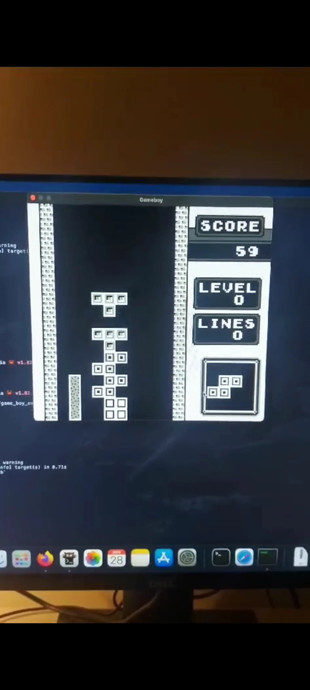

Gamma Ray Burst Platform
This platform allows an amateur astronomer to register, get email notifications when a Gamma-Ray Burst is detected by the Fermi satellite and post observations.


Hi, I'm Emmanuel. I program computers for a living, play music for unwinding, and I love building things!
I created my first program at 14. I decided not to wait for a university teacher. It was a GCD calculator in QBasic. When I got into university, my curiosity drove me to sociology and I ended up working as an elementary school teacher. I wanted to pass on my love for learning to my students and nurture their curiosity!
I came back to programming after meeting one of my father's students when I was teaching in Victoria, Canada. He was a Python specialist and I was fascinated by what he taught me about programming. I enrolled at 42 Québec, finished the common core studying 50 hours a week, found an internship and right after, a job.
I know how to learn and I love learning. It's not only about programming but also about what people do in their lives. I have a keen interest in translating real-world problems into software solutions.
This platform allows an amateur astronomer to register, get email notifications when a Gamma-Ray Burst is detected by the Fermi satellite and post observations.
This project started as a question on Claude. I was struggling to understand an article about Alias XOR mutability. I asked Claude if writing an async runtime would help me understand this concept. It did not. I asked what could be a better project. As a teacher, I know that we cannot learn something if we don't have the prerequisites. As I was asking what the prerequisites were for each project, I reached a point where I could tell I knew how to do it. I ended up with a complete plan toward Rust mastery. It's composed of projects and book references.
This was my first Rust project. I first emulate the CPU, then the clock, the interrupt and finally the Pixel Processing Unit (PPU). I've learned so much about the interaction of the machine and low level program that handles interruptions.

This was the last C project in 42 Common Core. I worked with Maxime to make this one work. We created a Ray Trace capable of drawing sphere, cylinder, plane and triangle.